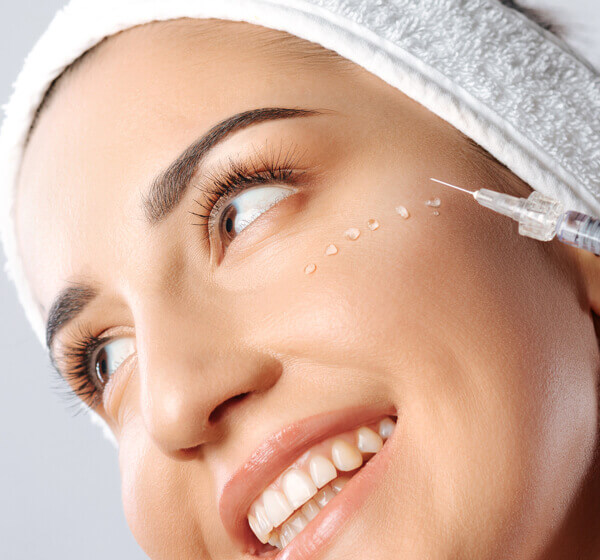
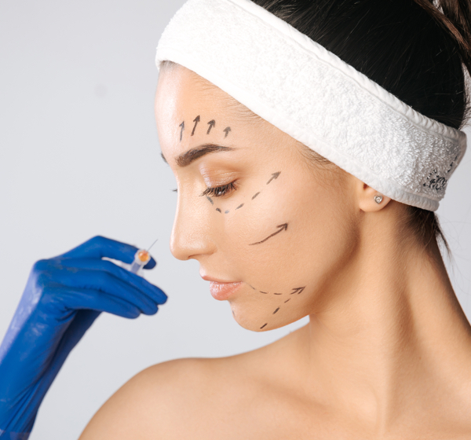
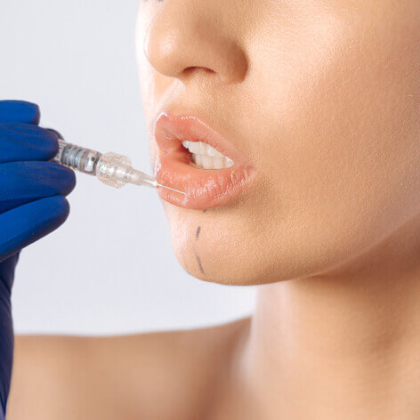
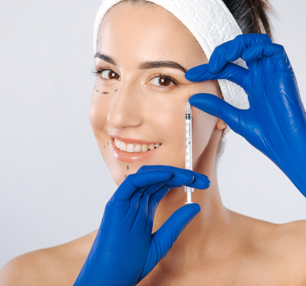

Пілінг (від англ. – «to peel» – відлущувати, чистити) – це контрольоване відлущення поверхневих шарів шкіри.
В результаті такого впливу можна стимулювати регенеративні процеси в шкірі, покращити стан та вигляд шкіри.
В моєму арсеналі є поверхневі та серединні пілінги.
Покази до поверхневого пілінгу:
вугрева хвороба легкого ступеня важкості;
профілактика вікових змін шкіри;
фотостаріння шкіри;
незначні косметичні дефекти шкіри.
Рекомендований курс: 4-10 процедур з проміжком 7-10 днів.
Покази до серединного пілінгу:
вікові зміни шкіри;
вугрева хвороба середнього ступеня важкості;
стриї, рубці;
гіперпігментація шкіри.
Рекомендований курс : 1-4 процедур з проміжком 2-3 тижні.
Хід процедури
На попередньо очищену та підговлену шкіру наноситься одна або комбінація різних кислот
для вирішення тої чи іншої проблеми. Після процедури можливе помірне або більш виражене
лущення (залежить від глибини пілингу). Видимий ефект настає через 1-2 тижні. Для бажаного результату я індивідуально підбираю вид пілінгу та кратність процедур.

Біоревіталізація та мезотерапія
Це ін’єкційні методи корекції проблем шкіри. Процедура полягає у введенні відповідних препаратів в дермальний шар шкіри за допомогою мікроін’єкцій.
Біоревіталізація – це ін’єкційне введення гіалуронової кислоти в шкіру у чистому її вигляді або ж у комбінаціі з дезиксорибополінуклеотидами, пептидами, антиоксидантами чи вітамінами. Гіалуронова кислота (ГК) – це природній компонент шкіри, який продукується нашими клітинами (фібробластами). Відомо, що з віком, згубним впливом зовнішнього середовища, активним темпом життя кількість ГК в шкірі зменшується, тому виникає потреба у її відновленні.
Покази:
тьмяний, нерівномірний тон обличчя;
зневоднена, тонка шкіра;
дрібні зморшки;
зниження тургору та еластичності шкіри;
розширені пори;
постакне, рубці;
купероз;
попередження та корекція фотостаріння шкіри.
Курс лікування складає 2-4 процедури з інтервалом 2-3 тижні.
Мезотерапія – це ін’єкційне введення у відповідні шари шкіри індивідуально підібраного коктейлю з вітамінів, мікроелементів, гіалуронової кислоти, пептидів, коензімів та антиоксидантів для вирішення естетичних або вікових проблем шкіри обличчя, тіла та волосистоі частини голови.
Покази:
корекція вікових змін шкіри (фото-, хроностаріння)
гіперпігментація шкіри;
нерівномірний тон обличчя;
зниження тургору та еластичності шкіри;
лікування акне (вугревої хвороби) та постакне;
лікування та профілактика целюліту;
лікування стрий та рубців;
лікування алопеції (випадіння волосся).
Курс лікування складає 5-10 процедур з інтервалом 7-10 днів.
Хід процедури
На попередньо очищену шкіру наноситься аплікаційна анестезія для максимально комфортного та безболісного проведення процедури. Після чого за допогою шприца з дуже тоненькою голкою мікродозами вводяться діючі речовини в шкіру.

Контурна пластика обличчя
Контурна пластика – це введення філлерів в середні або глибокі тканини обличчя, за рахунок чого можна відновити втрачені об’єми, підтягнути овал обличчя, розгладити глибокі заломи та зморшки, покращити вигляд шкірних покривів та нівелювати тіні, що надають обличчю всіх ознак старіння.
Еталоном молодості є свіже, підтягнуте обличчя без додаткових тіней. На жаль, з плином часу починають проявлятися наступні вікові зміни обличчя:
скелетизація виличної зони (поява западіння у області вилиці);
поява «мішків» та темних кіл під очима;
западіння в зоні носослізної борозни;
поява та поглиблення середньо-щічної борозни;
втрата об’ємів в середній третині обличчя;
акцентуація та нависання носогубної складки;
опущення кутиків рота;
поява губо-підборідної складки;
деформація овалу обличчя.
Проте сучасні методи контурної пластики дозволяють без оперативного втручання відстрочити небажаний відбиток років на Вашому обличчі та допоможуть виглядати гармонійно на будь-якому етапі Вашого життя.
Покази:
За допомогою контурної пластики можливо вирішити такі проблеми:
усунути «змучений» вигляд обличчя (поява «мішків та темних кіл під очима, западіння в зоні носослізної борозни);
корекція середньої третини обличчя (поява та поглиблення середньо-щічної борозни, заповнення западінь в середній третині обличчя);
корекція носогубної складки;
корекція опущених кутиків рота;
корекція губо-підборідної складки;
корекція підборіддя;
деформація овалу обличчя.
Результат помітний відразу після процедури. Не потребує анестезії та періоду реабілітації. Тривалість ефекту – 12 - 15 міс.
Хід процедури
Після попередньої дезинфекції шкіри, філлер вводиться у відповідне місце. Процедура проводиться за допомогою голки або канюлі, що не пошкоджує тканини та робить процедуру практично безболісною та максимально безпечною.

Контурна пластика губ
Особливе місце в контурній пластиці обличчя займає «корекція та б’ютифікація губ». Особисто для мене, – це не просто введення філлера в губи для того, щоб іх збільшити, а дуже делікатна та відповідальна процедура, за допомогою якоі можна:
гармонізувати риси обличчя;
вирівняти асиметрію;
підкреслити природню красу губ;
надати правильних акцентів обличчю.
Хід процедури
На попередньо очищену шкіру губ наноситься аплікаційна анестезія для максимально комфортного та безболісного проведення процедури. Для корекції губ застосовується препарат, до складу якого також входить лідокаїн. Процедура проводиться голкою або канюлею.

Ботулінотерапія (Botox, Dysport)
Ботулінотерапія – це ін’єкційний метод корекції мімічних зморшок за допомогою ботулінічного токсину типу А.
В молодому віці складки, які утворюються при активній міміці обличчя, безслідно зникають при розслабленні м’зів.
Проте з віком здатність шкіри відновлюватісь та розгладжуватись знижується, відповідно динамічні складки переходять у постійні, статичні зморшки. Початок утворення на шкірі таких зморшок - ідеальний період для їх лікування, тобто вибіркової блокади мімічної мускулатури препаратами ботулінічного токсину типу А. Таким чином зникають зморшки, що вже утворилися та іде профілактика нових.
Коли варто починати?
Cтаньте перед дзеркалом, сильно посміхніться, зробіть сердитий вираз обличчя, здивуйтеся. Якщо після активної міміки зморшки залишилися - саме час для їх лікування. Саме тому у даної процедури немає віку, а є покази.
Покази:
горизонтальні зморшки лоба;
вертикальні зморшки міжбрів’я;
мімічні зморшки навколо очей («гусячі лапки»);
шкірні складки в зоні носа та переносиці («зморшки кролика»);
корекція опущених кутиків рота;
яснева посмішка;
гіпергідроз (підвищене потовиділення) в зоні пахових складок, долонь та стоп.
Хід процедури
Процедура починається із дезинфекції шкіри. Потім за допомогою шприца з дуже тоненькою голкою у відпвідний м’яз вводиться потрібна доза препарату. Зазвичай, процедура займає 15-20 хв. та не потребує анестезії. Максимальний ефект від процедури стає помітним через 2 тижні і триває до 6 місяців.